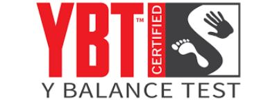

Najpierw
Zmierz długość kończyn
- Uczestnik leży tyłem na leżance.
- Zmierz odległość od kolca biodrowego przedniego górnego do kostki przyśrodkowej.
- Wykonaj dwa pomiary lewej i dwa pomiary prawej kończyny. Wynik zapisz w centymetrach.
Wizyta T0 · równowaga dynamiczna
Prosta instrukcja stanowiskowa: przygotowanie platformy, trzy kierunki sięgnięcia, nieważna próba i zapis wyniku.

Najpierw
Przygotuj
Trzy kierunki
Aktualna wersja do druku
Formularz zawiera pomiar długości kończyn oraz trzy próby ANT, PM i PL dla lewej i prawej nogi podporowej.
Przykład ustawienia
Lewa noga jest nogą podporową. Prawa noga przesuwa wskaźnik w kierunku tylno-bocznym. Stopa podporowa pozostaje w tej samej pozycji, a po sięgnięciu uczestnik wraca pod kontrolą do ustawienia startowego.

Rozwiń tylko potrzebny etap
Ważne: nieważna próba nie zastępuje jednej z trzech prawidłowych prób pomiarowych — oznacz ją i powtórz.
Oznacz jako „Invalid” i powtórz
Przed oddaniem formularza
Wynik znormalizowany: (MAX w cm / długość kończyny w cm) × 100.
Composite score: (ANT% + PM% + PL%) / 3.
Asymetria kierunkowa: bezwzględna różnica pomiędzy MAX lewej i prawej strony dla ANT, PM oraz PL.
To skrócona pomoc stanowiskowa. W razie rozbieżności obowiązuje aktualny manual Y Balance Test Kit oraz zatwierdzony SOP projektu.